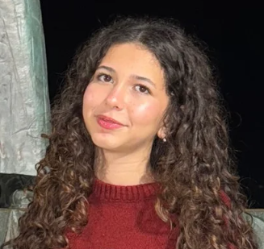
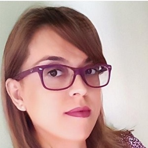
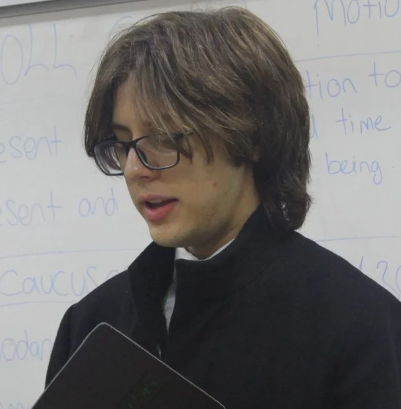

Beste YAŞAROĞLUBen Beste YAŞAROĞLU, 9. sınıf öğrencisiyim. Bilnet Karşıyaka Fen Lisesi’nde okuyorum. Çiğli Aydoğan Yağcı BİLSEM öğrencisiyim. Kodlamaya, tasarımlar oluşturmaya ilgiliyim. Ayrıca uzun süredir gitar çalıyorum ve uluslararası jimnastik yarışmalarına katıldım. Daha önce de Tübitak 4006-B sergisi, Tübitak 2204-A yarışmaları, Teknofest projelerinde, Erasmus+ Okul Eğitimi Akreditasyonu ve e-Twinning projelerinde görev aldım. 2023'te takımımla yaptığımız Teknofest projesi Türkiye birinciliğiyle ödüllendirildi. Takım projelerinde yer almak beni mutlu ediyor. Bu yılki projemizle de danışman öğretmenimiz Sibel KILLI’nın rehberliğinde çok güzel bir proje ortaya çıkaracağımıza ve başarılı olacağımıza inanıyorum.

Sibel KILLIÇiğli Aydoğan Yağcı BİLSEM’de BÖT Öğretmeniyim. 2002’de Ege Üniversitesinin BÖTE bölümünü, fakültemin ve bölümümün ilk mezunlarından biri olarak bitirdim. Ekim 2002'de başlayan meslek hayatım boyunca farklı türde okullarda, kademelerde ve farklı yaş gruplarıyla çalışma fırsatı buldum, bilişim teknolojilerine ilgisi olan öğrencilerimle yeni şeyler öğrenmek ve üretmek her zaman en büyük zevkim oldu. Kodlama, Web Tabanlı Programlama, 3D Tasarım, Mobil Uygulama Geliştirme, Robotik Kodlama ve Yapay Zeka Uygulamaları konularında üretmeye ve kendimi geliştirmeye devam ediyorum.

Harun TAŞKALDIRANMerhaba, ben Harun TAŞKALDIRAN. Bilnet Karşıyaka Fen Lisesi’nde 10. sınıf öğrencisiyim. Proje hazırlamayı hep sevmişimdir ve büyük bir zevkle yaparım. Daha önce Tübitak 4006-B sergisi ve Tübitak 2204-A yarışmaları için proje hazırladım. Kendimi kodlama ve 3D tasarım hazırlamada yetenekli görüyorum ve bu yönlerimi geliştirmeyi seviyorum.